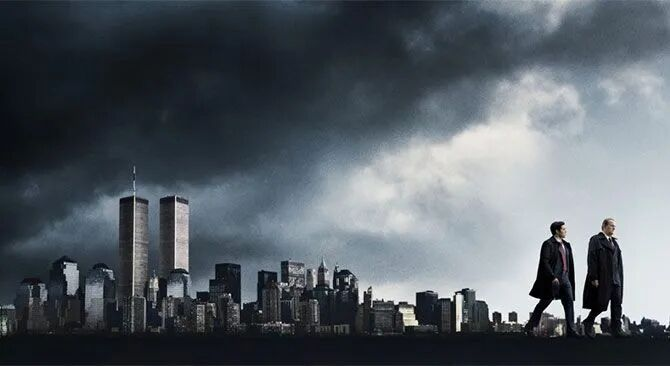

谍海轶闻 | 美国情报界眼中的9·11与猎杀拉登之路
点击蓝字关注「忽左忽右」


美国情报界眼中的9·11与猎杀拉登之路
以下是本期内容节选，预计阅读18分钟
冷战结束后，
恐怖主义成为美国情报机构的头号威胁
程衍樑
在过去的很多年，从上世纪40年代中情局（CIA）成立以及更早的联邦调查局（FBI）成立以来，这些情报部门最关注的执法队像和监视对象根本不是恐怖主义者，恐怖主义是什么时候从这些人群当中“脱颖而出”，成为头号威胁的？
沙青青
对美国的情报部门和执法部门来说，在20世纪90年代以前，它们的关注重点还在冷战上，在与苏联人较劲。90年代以后，苏联解体，美国赢得了冷战的“胜利”，整个世界进入了一个新的发展阶段。对当时的美国来说，一方面它要享受冷战胜利的福利和兴奋感，另一方面，来自非主权国家的威胁浮出水面，并且这些势力把美国视为第一目标。
其实在此之前，恐怖主义已经非常活跃了，但美国还不算被优先打击的目标。在当时的情况下，在中东，以色列首当其冲被恐怖主义视为众矢之的。当时的美国更多的是作为站在以色列背后的角色。
并且在80年代的时候，对阿拉伯世界来说，他们圣战的对象是苏联，不是美国。因为当时阿富汗的战事直接导致了苏联站在伊斯兰世界和很多极端主义势力的对立面，某种程度上，美国是乐见其成，还资助“圣战士”去面对苏联的侵略。
所以对于美国人来说，他们始终觉得自己并不是恐怖分子的首要目标。而到了20世纪90年代，发生了一个重大的改变。
如果你去注意当时留下的新闻报道，可以发现当时大多数恐怖主义往往集中在以色列或者是欧洲地区。欧洲地区的恐怖主义分子，例如北爱尔兰共和军团和意大利“红色旅”，都是属于意识形态的本土恐怖主义分子。
到了80年代，随着阿富汗战争的升级，也即主要的阿拉伯国家在对以色列的战争过程中不断失利，导致了中东为首的伊斯兰极端主义的恐怖主义开始兴起。在这一批兴起的队伍当中，“佼佼者”就是本·拉登和他的基地组织，从80年代就开始发端了。
美国人对本·拉登的观察实际上也是非常早的。早在80年代的时候，他们就注意到了这样一个沙特富商出身，跑到阿富汗去跟苏联人对打的另类角色，某种程度上来说，甚至对他进行了长期的观察。
CIA特别成立亚力克情报站
以应对本·拉登可能造成的威胁
程衍樑
沙老师刚刚提到，在90年代中叶以后，美国人就慢慢关注到了本·拉登。我们知道，美国的情报部门基本分成几大块，例如军情系统，对内的执法系统和中情局这样的对外刺探情报的系统，当然还有 NSA（美国国家安全局） 这样的更有权威的组织。那这些情报部门最早是从什么时候开始对本·拉登和基地组织产生兴趣的？
沙青青
最早关注到本·拉登的是CIA。CIA注意到本·拉登可能对美国造成直接威胁，最早可以追溯到1992年。在1996年底的时候，当时的CIA就已经知道，本·拉登把行动基地从苏丹转移到了阿富汗，他在阿富汗有很多的追随者。CIA的情报和军情网络实际上是遍布整个泛伊斯兰世界的，从中东一直到东南亚。
1996年，为了应对本·拉登可能造成的威胁，CIA特别成立了亚力克情报站。这个情报站并不设在CIA在兰利市的本部，它是设在本部之外的，但距离本部不远。
为什么要在本部之外设立这样一个组织？因为要监控和抓捕本·拉登和基地组织这样一个庞大的恐怖网络，是需要跨部门的协作的。
CIA虽然是行动主体，但这件事还牵扯到其他的相关部门，比如军事情报部门、国防部的相关情报部门，也会涉及到 FBI，所以当时CIA牵头成立了亚力克情报站。根据最初的理想设计，这个组织由CIA派出一个中层领导，作为牵头人来负责整体规划，同时也会把相关情报跟其他的执法部门或情报部门分享，通过亚力克情报站来交换有关本·拉登的情报，实现最有效率的沟通。但事与愿违，亚力克情报站建立以后始终运作得不太顺畅。
有几方面的原因。首先是CIA内部的原因，亚力克情报站当时的负责人是迈克尔·舒尔，这哥们是CIA内部的一个情报分析员出身。根据迈克尔·莫雷尔的回忆，20世纪90年代，CIA内部的文化非常不健康，做内勤的情报分析部门和做外勤的部门之间长期对立，互相看不起。所以当时CIA内部很多人并不看好迈克尔·舒尔坐这个位子，觉得他只是一个内部情报分析人员，没有出过外勤，一个坐办公室的人领导不好亚力克情报站这个跨部门监控的组织。
尽管这个组织是由当时的CIA局长特批建立，但其他的CIA直属高官和各个层级的高官都不太看好亚力克情报站能够发挥多大的功用，这个情报站本身在CIA内部就不是特别受重视，得到的相关资源也不太够。
《巨塔杀机》和“911”阴谋论
程衍樑
刚刚介绍了“911”事件之前两大情报机构对本·拉登的追踪。这里还涉及到对本·拉登个人的反美思想的溯源，这是个非常复杂的议题，这方面推荐大家去看《巨塔杀机》这本书。
《巨塔杀机》前面几章花了很大篇幅去聊赛义德·库特布这批学者，聊这批20世纪40年代到60年代的泛阿拉伯世界的埃及学者，他们的思想是如何影响到后来的阿富汗圣战这一代的，如何影响到像本·拉登这样的人，这是个非常复杂的脉络，书里有非常详实的解答。
以及，用飞机来撞击纽约世贸中心这种非常戏剧化的恐怖场景其实不是本·拉登原创的，本·拉登的计划也是拉姆齐·尤瑟夫交给他的，并且世贸大厦在 1993年的时候就已经遇到过一次恐怖袭击了。
沙青青
世贸大厦之前发生的这个爆炸事件引发的波澜没有这么大，一方面，这是一个零星的恐怖主义事件，另一方面，之前也发生过一些小型的私人飞机撞击事故。
“911”事件之后很多阴谋论主义者翻来覆去讲的一个事情是，当时美国方面也曾做过客机被劫持并用于袭击美国地标性建筑的危机事件的预案。早在90年代初就有相关预案，事后这些资料被人翻出来，用于证明阴谋论，说“911”事件是美国政府自己策划的事情。
我觉得有预案并不是一个非常奇怪的事情。根据相关资料，约翰・奥尼尔在主管世贸大厦安保的时候，就已经考虑过世贸大厦有可能会遭遇各种各样的恐怖主义的袭击事件，甚至也包括飞机撞击。只是当时所有人都没有想到，第一，撞击会发生两次，第二，撞击本身会导致大楼的坍塌。从建筑角度来说，很多人都认为，撞击的影响只会局限在某一个楼层，而不会导致整个建筑物的坍塌，更没有料想到这样一个灾难性的后果。
程衍樑
是的，其实1993年尤瑟夫策划的世贸大厦爆炸案也造成了非常大的损失，炸出了一个据说是200英尺的大坑。但后来去现场调查的人看了之后说，这个大楼的结构永远不会倒塌，这可能影响到许多人对世茂大厦的稳定性的判断。在“911”事件发生的时候，那么多人没有预想到有第二架飞机，也没有预想到，这个楼会因为体内热液温度过高，导致钢材软化，从而导致整栋楼坍塌，这也是造成那么大伤亡的直接原因。
而且关于“911”的二次撞击这个事情，《巨塔杀机》里也提到了一个细节。当时本·拉登自己应该是还躲在山洞里，上午世贸大厦遭受撞击的新闻传过去，本·拉登身边的人都很兴奋，觉得发生了一个大事，打算庆祝了，本·拉登自己知道整个计划，就让人打开电视，正好就看到了第二架飞机撞上去，过了一会传出消息，说五角大楼也被撞了。这时，本·拉登身边的追随者已经目瞪口呆了，本·拉登显得非常冷静，伸出了四根手指，意思是不要急，还有第四次。结果当然第四次没有落实，但这个细节非常具有电影的镜头感。
美国情报系统变革
程衍樑
在这之后，美国的情报系统发生了历史上最重要的一场变革，花了几年时间，几乎是重整山河。自从苏联解体以后，不光是中情局，整个美国的情报战线都经历了非常大的预算和规模收缩。恐怖主义成了头号大敌以后，似乎这些“老特务们”的好日子又重新回来了。沙老师可以再介绍一下，“911”事件之后美国情报系统的一系列调整。
沙青青
对这些“老特务”来说，其实是喜忧参半。喜的一方面是情报部门重新获得了重视。实际上在冷战结束之后，CIA经历过一次大裁员，人力规模缩减了大概1/4，“911”事件之后，CIA重新获得了一些相关资源。不光CIA，美国所有的情报机构都重新获得了资源的注入。
但忧的一方面就是说要追究责任，革你们的命了。所以“911”事件之后，2002年的时候，当时美国国会成立了一个“911调查委员会”，一方面调查事件发生的原委经过，另一方面是追究事件中相关部门是否有失职和失察的行为，以及一些制度漏洞。后来在2004年7月份出了一份《“9·11”委员会报告》，这份报告的直接产物就是对美国情报系统的一次大刀阔斧的改革，当时就成立了美国国家情报总监（DNI: Direct of National Intelliging）这样一个位置。
这个职位以及它所辖的办公室是高于美国一切情报机关的，包括CIA，负责统筹规划美国所有的情报体系，你可以把它视为美国情报界的沙皇，通过这样一个情报界的沙皇，去重新梳理和调整美国情报界的权力归属，同时结束之前中央情报总监名不副实和权责不相符的情况，来彻底杜绝各个情报机关之间信息不共享、官僚对立的状态。当然这是一个理想状态。除此之外，还成立了国土安全部（DHS: Department of Homeland Security），实际上这个部门分走了FBI的一大块权利。
所以这个变革一方面重塑了情报部门，另一方面对美国国内安全和国内执法重新进行了权责的划分，既打压了CIA的权利，也削减了FBI的权利。
程衍樑
对，其实除了组织结构上的变革，“911”事件带来的最直接的影响是，美国几乎把反恐，尤其是清剿一切和恐怖主义有关联的政权，当成了一个国策来对待，反恐横跨了整个小布什时代。
本期嘉宾
沙青青，上海图书馆历史文献中心副主任
本期提到奥萨马·本·拉登 / 穆拉穆罕默德·奥马尔 / 拉姆齐·艾哈迈德·尤瑟夫 / 赛义德·库特布 / 萨达姆·侯赛因 / 艾曼·扎瓦希里 迈克尔·莫雷尔 / 迈克尔·舒尔 / 约翰・奥尼尔 / 乔治·特尼特 / 科林·盧瑟·鮑威爾 / 乔治·沃克·布什 / 迪克·切尼 / 罗伯特·盖茨 / 詹姆斯·卡特赖特 / 艾哈迈德·舒亚·帕夏 / 阿什法克·帕尔维兹·卡亚尼 / 费萨尔·本·图尔基 法蘭西斯·福山 / 约翰·勒卡雷
点击文末“阅读原文” 查看本期豆列
|||END||| 节目后期：hotair | 制作总监：王若弛文字整理、排版：谢新月资料延伸：禾放
苹果播客 | Spotify | 小宇宙App | 网易云音乐喜马拉雅 | 蜻蜓 FM | 荔枝 FM央广云听 | 芒果动听 | 阿基米德 | 三联中读搜索
『忽左忽右』
订阅收听